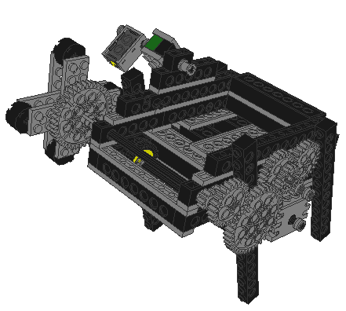
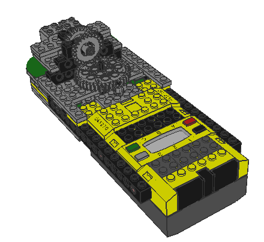
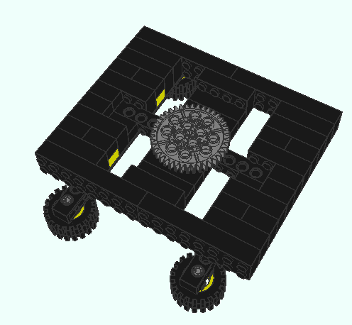

CardDealer
My first full LEGO mindstorms project was an automated card dealer. I created it in Summer, 2002. This robot deals up to 8 players any number of cards. I was out of touch sensors for user input, so the number of players and cards was hard-coded in the NQC program.
The dealer consists of 3 components, the base, the rotating body, and the dealing tower itself. The dealing mechanism uses two components: a standard 10-point technic axle to throttle card distribution as well as a wheel to provide the card feeding force. This construction works quite well, especially with plastic cards, in which case the robot never deals out more than one card at once.
See the program in NQC: [[CardDealer/Code]].
== Media ==
You can download the model in [[http://www.leocad.org|LeoCAD]] format. Just click the image to get access to the lc file. Note: I don't know the default extension to use for leocad files, but .LC sounded good so I went with it. I wonder if anyone but me uses leocad... :)
{{}}
[[]]
This is the cool part! The cards go in the tray :)
{{}}
[[]]
Just a simple rotating thing, sensitive to corners of the base.
{{}}
[[]]
The base is heavily inspired by the Robot Arm in Dave Baum's Definitive Guide to LEGO Mindstorms